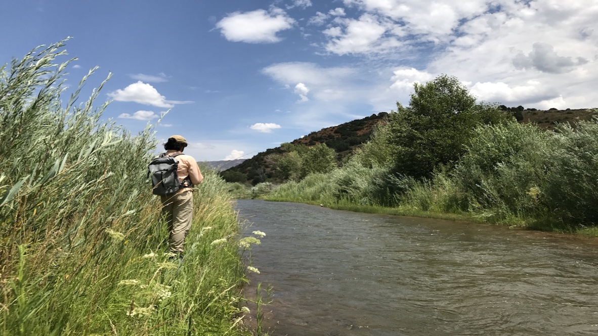
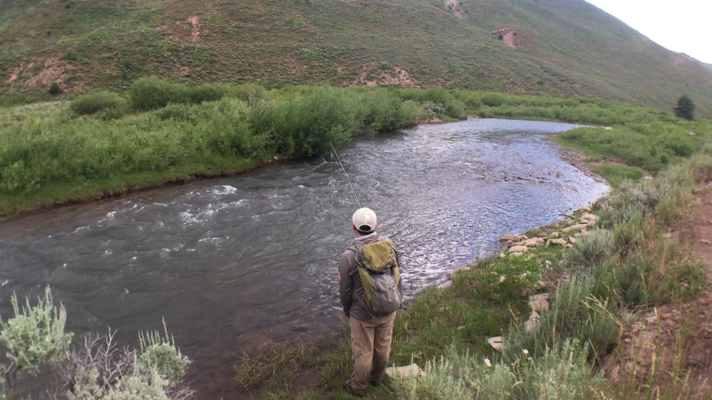
 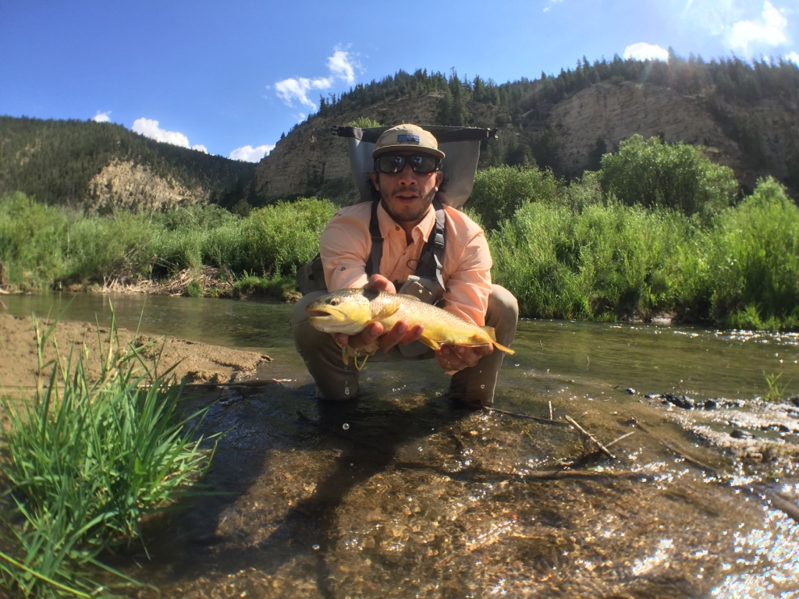
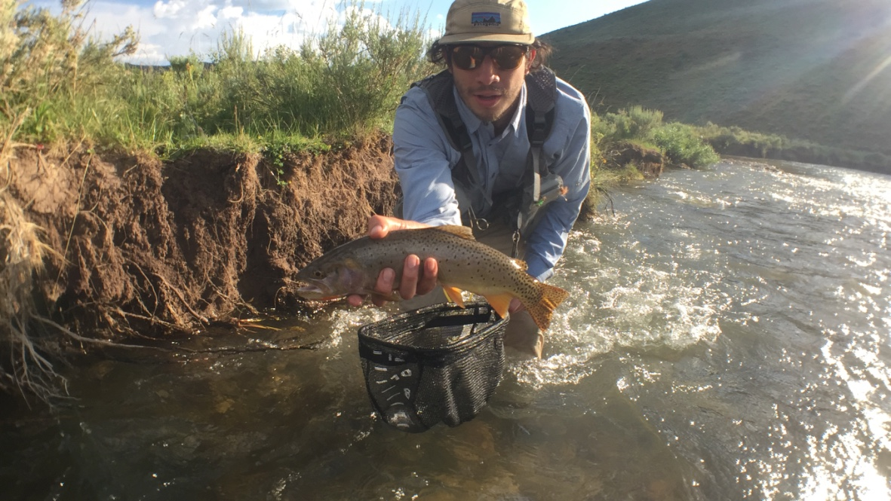
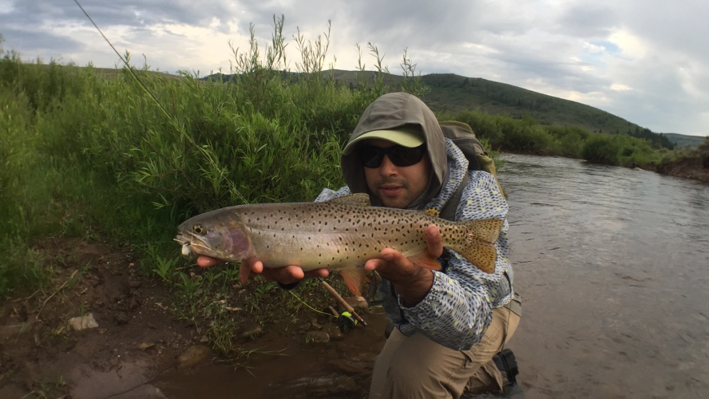
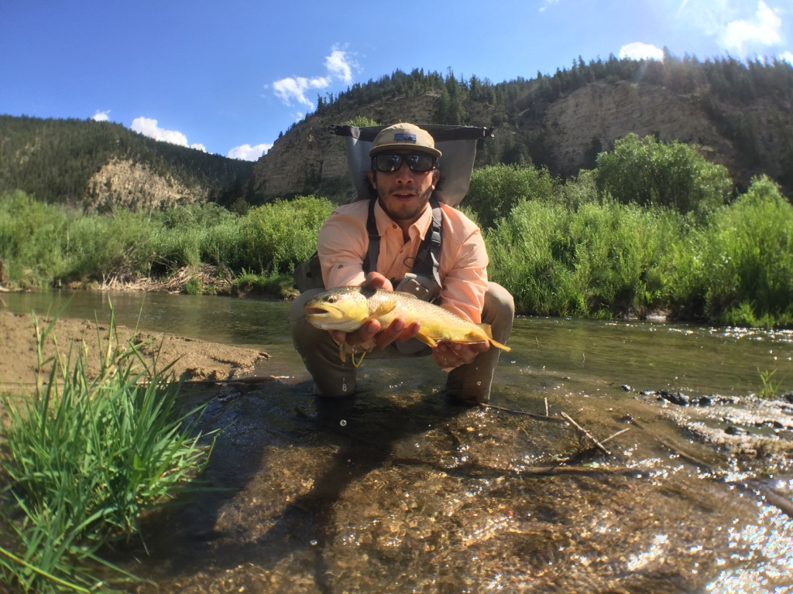
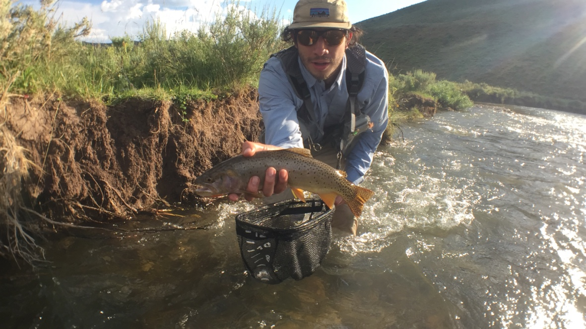
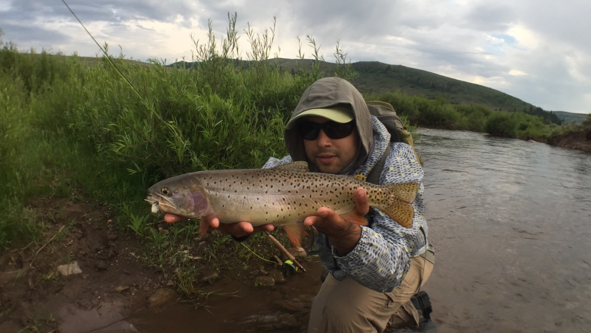
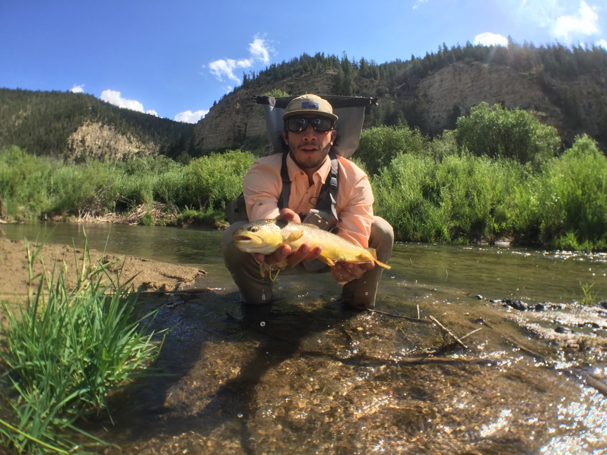
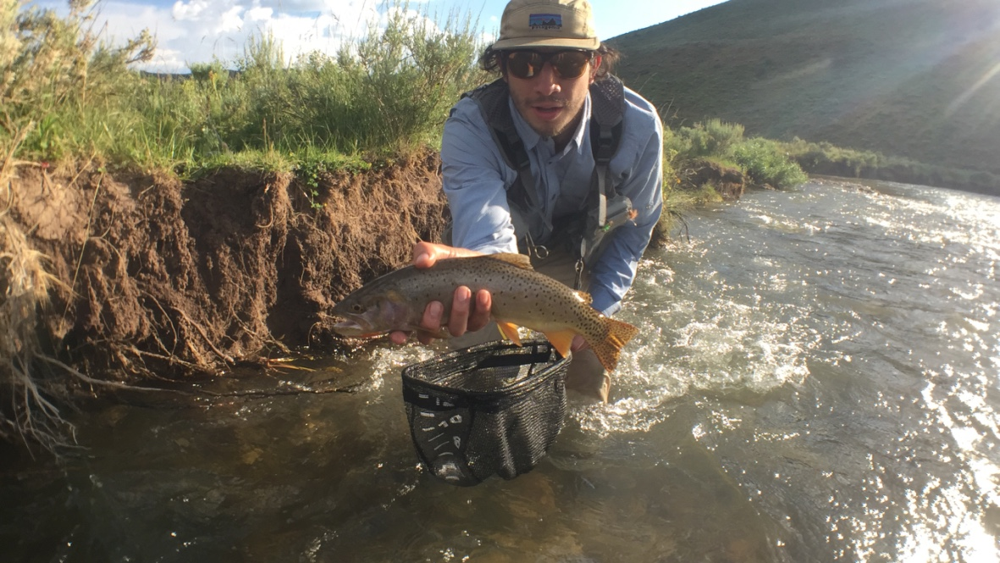
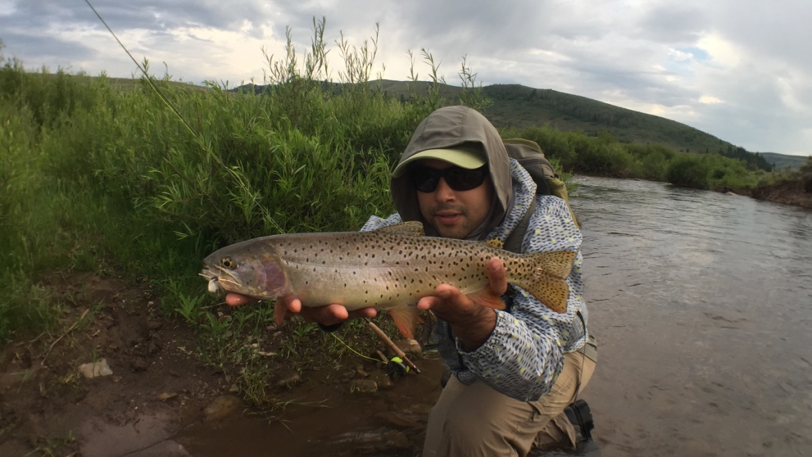
Fly fishing is an angling method in which an artificial "fly" is used to catch fish. The fly is cast using a fly rod, reel, and specialized weighted line. Casting a nearly weightless fly or "lure" requires casting techniques significantly different from other forms of casting. Fly fishermen use hand tied flies that resemble natural invertebrates, baitfish, other food organisms, or "lures" to provoke the fish to strike (bite at the fly).
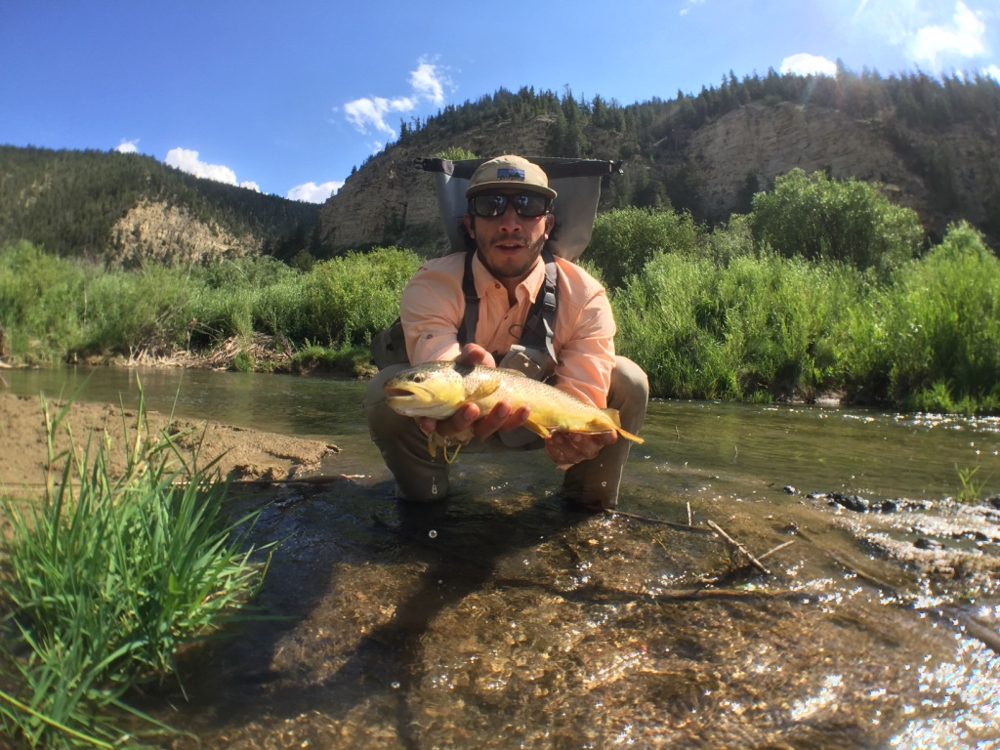
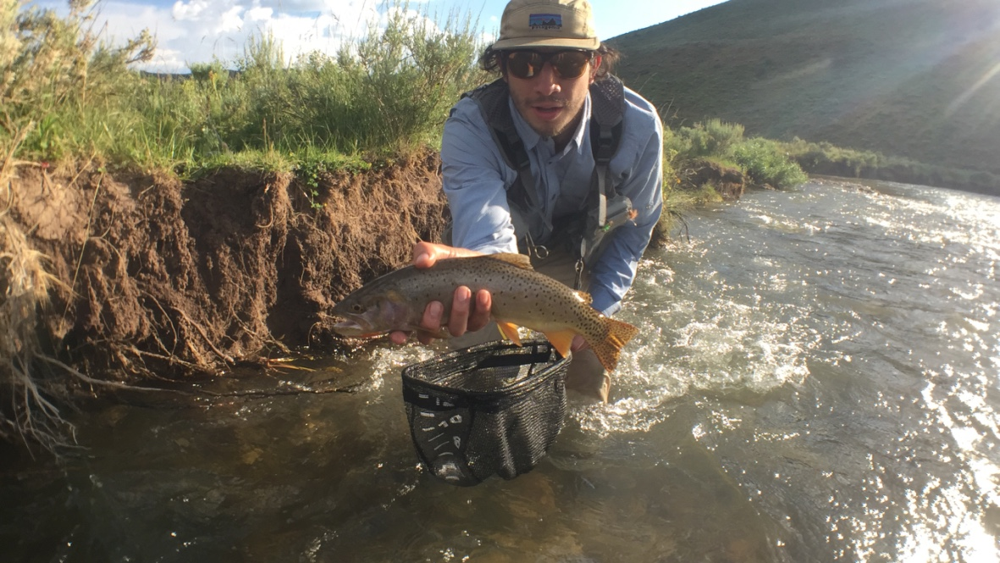
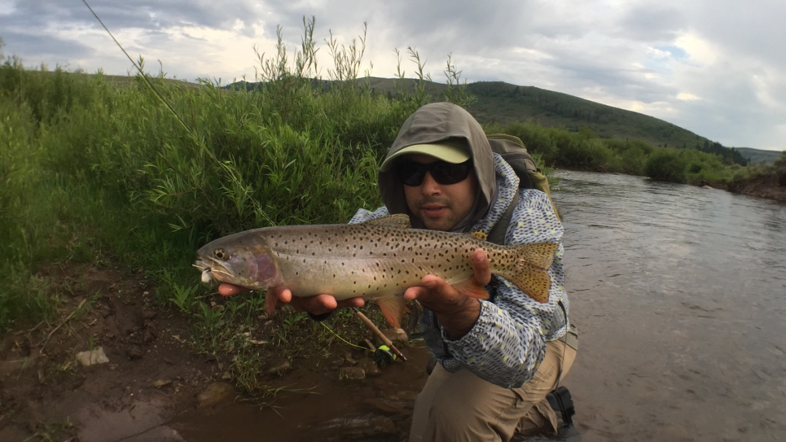